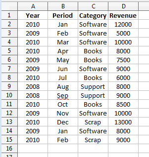
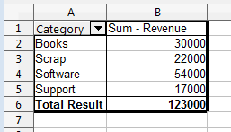
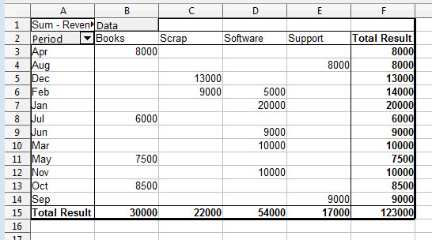
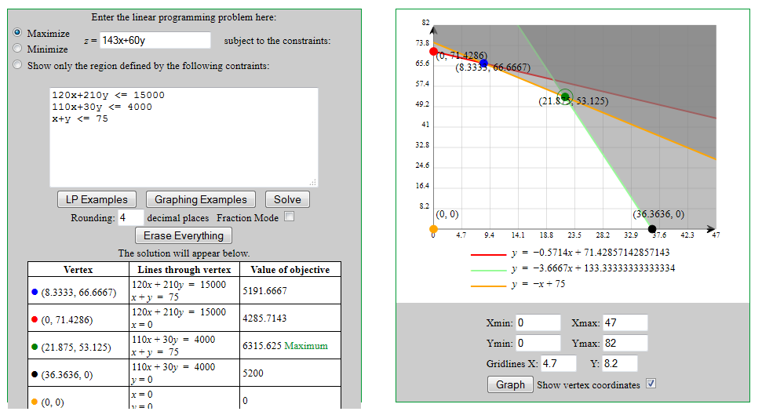

Chapter 27. Functions and Data Analysis¶
Topics
Calling Calc Functions from Code; Pivot Tables; Goal Seek; Linear and Nonlinear Solving (using SCO, DEPS)
Example folders: "Calc Tests" and "Utils"
This chapter looks at how to utilize Calc's spreadsheet functions directly from Java, and then examines four of Calc's data analysis features: pivot tables, goal seeking, and linear and nonlinear solving. There are two nonlinear examples, one using the SCO solver, the using employing DEPS.
1. Calling Calc Functions from Code¶
Calc comes with an extensive set of functions, which are described in Appendix B of the Calc User Guide, available from https://libreoffice.org/get-help/documentation. The information is also online at https://help.libreoffice.org/Calc/Functions_by_Category, organized into 11 categories:
- Database: for extracting information from Calc tables, where the data is organized into rows. The "Database" name is a little misleading, but the documentation makes the point that Calc database functions have nothing to do with Base databases. Chapter 13 of the Calc User Guide ("Calc as a Simple Database") explains the distinction in detail.
- Date and Time; e.g. see the EASTERSUNDAY function below
- Financial: for business calculations;
- Information: many of these return boolean information about cells, such as whether a cell contains text or a formula;
- Logical: functions for boolean logic;
- Mathematical: trigonometric, hyperbolic, logarithmic, and summation functions; e.g. see ROUND, SIN, and RADIANS below;
- Array: many of these operations treat cell ranges like 2D arrays; e.g. see TRANSPOSE below;
- Statistical: for statistical and probability calculations; e.g., see AVERAGE and SLOPE below;
- Spreadsheet: for finding values in tables, cell ranges, and cells;
- Text: string manipulation functions;
- Add-ins: a catch-all category that includes a lot of functions – extra data and time operations, conversion functions between number bases, more statistics, and complex numbers. See IMSUM and ROMAN below for examples. The "Add-ins" documentation starts at https://help.libreoffice.org/Calc/Add-in_Functions, and continues in https://help.libreoffice.org/Calc/Add-in_Functions,_List_of_Analysis_Functions_Part_One and https://help.libreoffice.org/Calc/Add-in_Functions,_List_of_Analysis_Functions_Part_Two.
A different organization for the functions documentation is used at the OpenOffice site (https://wiki.openoffice.org/wiki/Documentation/How_Tos/Calc:_Functions_listed_by_category), and is probably easy to use when browsing/searching for a suitable function.
If you know the name of the function, then a reasonably effective way of finding its documentation is to search for "libreoffice calc function" + the function name.
The standard way of using these functions is, of course, inside cell formulae. But it's also possible to call them from code via the XFunctionAccess interface. XFunctionAccess only contains a single function, callFunction(), but it can be a bit hard to use due to data typing issues.
Calc.callFun() creates an XFunctionAccess instance, and executes callFunction():
// in the Calc class
public static Object callFun(String funcName, Object[] args)
{
try {
XFunctionAccess fa =
Lo.createInstanceMCF(XFunctionAccess.class,
"com.sun.star.sheet.FunctionAccess");
return fa.callFunction(funcName, args);
}
catch(Exception e)
{ System.out.println("Could not invoke \"" + funcName + "\"");
return null;
}
} // end of callFun()
public static Object callFun(String funcName, Object arg)
{ return callFun(funcName, new Object[]{arg}); }
Calc.callFun() is passed the Calc function name and an array of arguments; the function's result is returned as an Object instance. The second version of Calc.callFun() is for calling functions that accept a single argument.
Several examples of how to use Calc.callFun() can be found in the FunctionsTest.java example:
// in FunctionsTest.java
public static void main(String[] argus)
{
XComponentLoader loader = Lo.loadOffice();
// round a double
System.out.println("ROUND result for 1.999 is: " +
Calc.callFun("ROUND", 1.999) + "\n");
: // more examples, explained below
Lo.closeOffice();
} // end of main()
The value passed to Calc.callFun() in the code above is an ordinary double, but Java autoboxes it to become a Double object. This is passed to the second version of Calc.callFun() which handles a single Object input argument.
The printed result is:
ROUND result for 1.999 is: 2.0
Java can be used to convert the returned Object value. For example, the value returned by ROUND can be cast to a double:
double res = (Double) Calc.callFun("ROUND", 1.999);
The Object is cast to Double, and then Java unboxes the object, converting it to a double.
Function calls can be nested, as in:
// in FunctionsTest.java
System.out.printf("SIN result for 30 degrees is: %.3f\n\n",
Calc.callFun("SIN", Calc.callFun("RADIANS", 30)));
The call to RADIANS converts 30 degrees to radians. The returned Object is accepted by the SIN function as input. The output is: SIN result for 30 degrees is: 0.500 Many functions require more than one argument. In that case, the sequence of arguments must be stored in an Object[] array before passing them to Calc.callFun().
For instance:
// in FunctionsTest.java
Object[] args = new Object[]{1, 2, 3, 4, 5}; // five args
double avg = (Double) Calc.callFun("AVERAGE", args);
System.out.println("Average of the numbers is: " +avg + "\n");
This reports the average to be 3.0.
When the Calc function documentation talks about an "array" or "matrix" argument, then the data needs to be packaged as a 2D array. For example, the SLOPE function takes two arrays of x and y coordinates as input, and calculates the slope of the line through them. These two 1D arrays must be passed to Calc.callFun() as two 2D arrays:
// in FunctionsTest.java
double[][] xData = {{1.0, 2.0, 3.0}};
// a 2D array/matrix holding one row of data
double[][] yData = {{3.0, 6.0, 9.0}};
args = new Object[]{yData, xData};
double slope = (Double) Calc.callFun("SLOPE", args);
System.out.println("SLOPE of the line: " + slope + "\n");
The args array has to be built in stages so that the two arrays can be treated as two Objects. The slope result is 3.0, as expected.
The functions in the "Array" category almost all use 2D arrays as arguments. For example, the TRANSPOSE function is called like so:
// in FunctionsTest.java
// transpose a matrix
double[][] arr = {{1, 2, 3},{4, 5, 6}};
args = new Object[]{arr};
Object[][] transMat = (Object[][]) Calc.callFun("TRANSPOSE", args);
Calc.printArray(transMat);
The input array is in row-order, so the array arr created above has two rows and three columns. The printed transpose is:
Row x Column size: 3 x 2
1.0 4.0
2.0 5.0
3.0 6.0
Note that the result of this call to Calc.callFun() was not a double but a transposed 2D array, which is why the Object result was cast to Object[][]. Unfortunately, Java's typing does not allow the result to be cast to double[][]. The casting can be done using Calc.convertToDoubles():
double[][] trans = Calc.convertToDoubles(transMat);
The TRANSPOSE function only takes a single argument, so it's possible to use the second version of Calc.callFun() which takes a single Object input argument. A slight problem is caused by Java's type system; it's necessary to explicitly cast the double[][] array to Object in the call:
// in FunctionsTest.java
Object[][] transMat =
(Object[][]) Calc.callFun("TRANSPOSE", (Object)arr);
If arr is not cast then Java will issue a runtime error.
There are several functions for manipulating imaginary numbers, which must be written in the form of strings. For example, IMSUM sums a series of complex numbers like so:
// in FunctionsTest.java
// sum two imaginary numbers: "13+4j" + "5+3j" returns 18+7j.
String[][] nums = {{"13+4j"},{"5+3j"}};
args = new Object[]{nums};
String sum = (String) Calc.callFun("IMSUM", args);
System.out.println("13+4j + 5+3j: "+ sum + "\n");
Since IMSUM expects a series of complex numbers, Calc.callFun() must be passed a 2D array. Each row contains a single string argument representing a complex number.
The summed complex number is returned as the string "18+7j". This means that the Calc.callFun() result is cast to String in this case.
The IMSUM function is only processing a single argument, and so the single argument version of Calc.callFun() can be called. As with the TRANSPOSE function example, the String[][] array must be expicitly cast to an Object:
String sum = (String) Calc.callFun("IMSUM", (Object)nums);
Functions Help¶
If you can't access the Calc documentation on functions, then Calc.java contains two help functions: Calc.getFunctionNames() and Calc.printFunctionInfo(). The former prints a very long list of function names:
// in FunctionsTest.java
System.out.println("Function names");
Lo.printNames( Calc.getFunctionNames(), 6);
The output begins like so:
Function names
No. of names: 483
"ABS" "ACCRINT" "ACCRINTM" "ACOS" "ACOSH" "ACOT"
"ACOTH" "ADDRESS" "AGGREGATE" "AMORDEGRC" "AMORLINC" "AND"
"ARABIC" "AREAS" "ASC" "ASIN" "ASINH" "ATAN"
"ATAN2" "ATANH" "AVEDEV" "AVERAGE" "AVERAGEA" "AVERAGEIF"
"AVERAGEIFS" "B" "BAHTTEXT" "BASE" "BESSELI" "BESSELJ"
"BESSELK" "BESSELY" "BETA.DIST" "BETA.INV" "BETADIST" "BETAINV"
"BIN2DEC" "BIN2HEX" "BIN2OCT" "BINOM.DIST" "BINOM.INV" "BINOMDIST"
:
If you know a function name, then Calc.printFunctionInfo() will print details about it.
For instance, information about the ROMAN function is obtained like so: Calc.printFunctionInfo("ROMAN"); The output is:
Properties for "ROMAN":
Id: 383
Category: 10
Name: ROMAN
Description: Converts a number to a Roman numeral.
Arguments: [Lcom.sun.star.sheet.FunctionArgument;@b3fc9e
No. of arguments: 2
1. Argument name: Number
Description: "The number to be converted to a Roman numeral must
be in the 0 - 3999 range."
Is optional?: false
2. Argument name: Mode
Description: "The more this value increases, the more the Roman
numeral is simplified. The value must be in the 0 - 4 range."
Is optional?: true
This output states that ROMAN can be called with one or two arguments, the first being a decimal, and the second an optional argument for the amount of 'simplification' carried out on the Roman numeral. For example, here are two ways to convert 999 into Roman form:
// in FunctionsTest.java
String roman = (String) Calc.callFun("ROMAN", 999);
args = new Object[]{999, 4}; // use max simplification
String roman4 = (String) Calc.callFun("ROMAN", args);
System.out.println("999 in Roman numerals: "+
roman + " or " + roman4 + "\n");
The output is:
999 in Roman numerals: CMXCIX or IM
Calc.getFunctionNames() and Calc.printFunctionInfo() utilize the XFunctionDescriptions interface for retrieving an indexed container of function descriptions. Each function description is an array of PropertyValue objects, which contain a "Name" property. Calc.findFunction() uses this organization to return the PropertyValue[] array for a given function name:
// in the Calc class
public static PropertyValue[] findFunction(String funcNm)
// get the function description properties for funcNm
{
// get all the function descriptions
XFunctionDescriptions funcsDesc =
Lo.createInstanceMCF(XFunctionDescriptions.class,
"com.sun.star.sheet.FunctionDescriptions");
if (funcsDesc == null) {
System.out.println("No function descriptions were found");
return null;
}
// find the description whose fn name == funcNm
int numFuncs = funcsDesc.getCount();
for (int i = 0; i < numFuncs; i++) {
try {
PropertyValue[] props =
(PropertyValue[]) funcsDesc.getByIndex(i);
for (int p = 0; p < props.length; p++) {
if ((props[p].Name.equals("Name")) &&
(props[p].Value.equals(funcNm)))
return props;
}
}
catch(Exception e) {}
}
System.out.println("Function \"" + funcNm + "\" not found");
return null;
} // end of findFunction()
The PropertyValue[] array contains five properties: "Name", "Description", "Id", "Category", and "Arguments". The "Arguments" property stores an array of FunctionArgument objects which contain information about each argument's name, description, and whether it is optional. This information is printed by Calc.printFunArguments():
// in the Calc class
public static void printFunArguments(PropertyValue[] propVals)
// print the function argument info in propVals
{
// get the FunctionArgument property
FunctionArgument[] fargs = (FunctionArgument[])
Props.getValue("Arguments", propVals);
if (fargs == null) {
System.out.println("No arguments found");
return;
}
// print all the info
System.out.println("No. of arguments: " + fargs.length);
for (int i=0; i < fargs.length; i++)
printFunArgument(i, fargs[i]);
} // end of printFunArguments()
public static void printFunArgument(int i, FunctionArgument fa)
{
System.out.println((i+1) + ". Argument name: " + fa.Name);
System.out.println(" Description: \"" + fa.Description + "\"");
System.out.println(" Is optional?: " + fa.IsOptional + "\n");
} // end of printFunArgument()
Calc.printFunctionInfo() calls Calc.findFunction() and Calc.printFunArguments() to
report on a complete function:
// in the Calc class
public static void printFunctionInfo(String funcName)
{
PropertyValue[] propVals = findFunction(funcName);
Props.showProps(funcName, propVals);
printFunArguments(propVals);
System.out.println();
} // end of printFunctionInfo()
2. Pivot Tables¶
Pivot tables are explained in detail in chapter 8 of the Calc User's Guide. They allow a user to view a spreadsheet consisting of columns of data in a variety of table formats, thereby highlighting the relationships between the columns. For example, Figure 1 shows the small spreadsheet in my "pivottable1.ods".

Figure 1. The "pivottable1.ods" Spreadsheet.
The spreadsheet uses a database-like organization, with each row acting as a record, and each column is a different type/kind of information. This formatting style is described in chapter 13 "Calc as a Simple Database" in the User Guide.
The drawback of this kind of data structuring is that it can be difficult to see the underlying relationships between the columns; this is where pivot tables can help.
For example, a pivot table can be generated showing how the "Category" column affects "Revenue (see Figure 2).

Figure 2. "Category" Affecting "Revenue".
Note that the pivot table shows the revenue sum in column B, since several revenue entries in the original sheet are covered by each category.
Alternatively, it's possible to see how "Period" and "Category" interact to affect the revenue, as in Figure 3.

Figure 3. Period and Category Affect on "Revenue".
The ordering of the "Period" values can be changed by clicking on the arrow next to the "Period" text in cell "A2", then selecting a custom sort (e.g. Jan, Feb, Mar, etc.).
The "Total Result" row and column are added automatically, and can be changed easily. It's also possible to change the way that the revenue data is grouped (e.g. it can be averaged instead of being summed).
Pivot tables are straightforward to create and modify via Calc's GUI, starting from the Data, Pivot Table, Create menu item. Calc automatically selects all the cells used in the database-like table like the one in Figure 1, and displays the layout dialog shown in Figure 4.

Figure 4. The Pivot Table Layout GUI.
The right-most "Available Fields" list contains the names of the columns in the sheet, while the other four fields (Page, Column, Row, and Data) are empty. Figure 4 shows a bug in the current version of the Pivot Table GUI – the addition of a "Data" name in the "Column" fields list. This name cannot be removed from the layout dialog, but can be ignored since it doesn't appear in the rendered pivot table.
The pivot table layout in Figure 5 is easily created by dragging the "Period" name to the Row fields list, "Category to the Column fields list, and "Revenue" to the Data fields list, where it's converted into "Sum – Revenue".

Figure 5. The Layout for the Pivot Table in Figure 3.
Pivot Tables in the API¶
The Calc API refers to pivot tables by their old Office name, DataPilot tables. The relationships between the DataPilotservices and interfaces are shown in Figure 6.

Figure 6. The DataPilot Services and Interfaces.
Figure 6 is best understood by reading downwards: a DataPilotTables service (note the "s") is a sequence of DataPilotTable services. Each table contains a DataPilotFields service (note the "s") which manages a sequence of DataPilotField objects.
Each DataPilotField is a named property set, representing a column in the source sheet. For example, in the following code, four pilot fields will be created for the "pivottable1.ods" sheet shown in Figure 1, one each for the columns named Year, Period, Category, and Revenue.
Figure 6 mentions one of the more important services – DataPilotDescriptor, which does the hard work of converting sheet columns into pilot fields. DataPilotDescriptor is also responsible for assigning each pilot field to one of the Page, Column, Row, or Data field lists.
The PivotSheet1.java example illustrates how to create the pivot table shown in Figure 3. The program begins by opening the "pivottable1.ods" file (Figure 1):
// in PivotSheet1.java
public static void main(String args[])
{
XComponentLoader loader = Lo.loadOffice();
XSpreadsheetDocument doc =
Calc.openDoc("pivottable1.ods", loader);
if (doc == null) {
System.out.println("Could not open pivottable1.ods");
Lo.closeOffice();
return;
}
GUI.setVisible(doc, true);
XSpreadsheet sheet = Calc.getSheet(doc, 0);
XSpreadsheet dpSheet =
Calc.insertSheet(doc, "Pivot Table", (short)1);
createPivotTable(sheet, dpSheet);
Calc.setActiveSheet(doc, dpSheet);
Lo.saveDoc(doc, "pivotExample1.ods");
Lo.waitEnter();
Lo.closeDoc(doc);
Lo.closeOffice();
} // end of main()
A second sheet (called dpSheet) is created to hold the generated pivot table, and createPivotTable() is called:
// in PivotSheet1.java
private static void createPivotTable(
XSpreadsheet sheet, XSpreadsheet dpSheet)
{
XCellRange cellRange = Calc.findUsedRange(sheet);
// find the table data on the sheet
XDataPilotTables dpTables = Calc.getPilotTables(sheet);
/* create a new pilot descriptor which will later be added
as a new pilot table to the pilot tables */
XDataPilotDescriptor dpDesc =
dpTables.createDataPilotDescriptor();
/* add the sheet's column data to the descriptor;
this causes the creation of pilot fields */
dpDesc.setSourceRange( Calc.getAddress(cellRange) );
/* assign "Available" (Hidden) pilot fields to the
Page, Column, Row, and Data fields
*/
XIndexAccess fields = dpDesc.getHiddenFields();
XPropertySet props;
// set Page field; not used here
//props = Lo.findContainerProps(fields, "Year");
//Props.setProperty(props, "Orientation",
// DataPilotFieldOrientation.PAGE);
// set Column field
props = Lo.findContainerProps(fields, "Category");
Props.setProperty(props, "Orientation",
DataPilotFieldOrientation.COLUMN);
// set Row field
props = Lo.findContainerProps(fields, "Period");
Props.setProperty(props, "Orientation",
DataPilotFieldOrientation.ROW);
// set Data field, calculating the sum
props = Lo.findContainerProps(fields, "Revenue");
Props.setProperty(props, "Orientation",
DataPilotFieldOrientation.DATA);
Props.setProperty(props, "Function", GeneralFunction.SUM);
// add new pivot table to other tables and to sheet at A1
CellAddress destAddr = Calc.getCellAddress(dpSheet, "A1");
dpTables.insertNewByName("PivotTableExample", destAddr, dpDesc);
} // end of createPivotTable()
All the sheet's data is selected by calling Calc.findUsedRange(). Then Calc.getPilotTables() obtains the DataPilotTables service:
// in the Calc class
public static XDataPilotTables getPilotTables(XSpreadsheet sheet)
{
XDataPilotTablesSupplier dpSupp =
Lo.qi(XDataPilotTablesSupplier.class, sheet);
XDataPilotTables dpTables = dpSupp.getDataPilotTables();
if (dpTables == null)
System.out.println("No data pilot tables found");
return dpTables;
} // end of getPilotTables()
Calc.getPilotTables() utilizes the XDataPilotTablesSupplier interface of the Spreadsheet service to obtain the DataPilotTables service.
PivotSheet1.java's task is to create a new pilot table, which it does indirectly by creating a new pilot description. After this pilot description has been initialized, it will be added to the DataPilotTables service as a new pilot table.
An empty pilot description is created by calling XDataPilotTables.createDataPilotDescriptor():
// in createPivotTable in PivotTable.java
XDataPilotTables dpTables = Calc.getPilotTables(sheet);
XDataPilotDescriptor dpDesc = dpTables.createDataPilotDescriptor();
The new XDataPilotDescriptor reference (dpDesc) creates a pilot table by carrying out two tasks – loading the sheet data into the pilot table, and assigning the resulting pilot fields to the Page, Column, Row, and Data fields in the descriptor. This latter task is similar to what the Calc user does in the GUI's layout window in Figure 5.
The descriptor is assigned a source range that spans all the data:
dpDesc.setSourceRange( Calc.getAddress(cellRange) );
It converts each detected column into a DataPilotField service, which is a named property set; the name is the column heading.
These pilot fields are conceptually stored in the "Available Fields" list shown in the layout window in Figure 5, and are retrieved by calling XDataPilotDescriptor.getHiddenFields():
XIndexAccess fields = dpDesc.getHiddenFields();
It's useful to list the names of these pilot fields:
// in createPivotTable() in PivotSheet1.java
String[] fieldNames = Lo.getContainerNames(fields);
System.out.println("Field Names (" + fieldNames.length + "):");
for(String name : fieldNames)
System.out.println(" " + name);
The output for the spreadsheet in Figure 1 is:
Field Names (5):
Year
Period
Category
Revenue
Data
This list includes the strange "Data" pilot field which you may remember also cropped up in the layout window in Figure 4.
The second task is to assign selected pilot fields to the Page, Column, Row, and Data field lists. The standard way of doing this is illustrated below for the case of assigning the "Category" pilot field to the Column field list:
// in createPivotTable() in PivotSheet1.java
XPropertySet props = Lo.findContainerProps(fields, "Category");
Props.setProperty(props, "Orientation",
DataPilotFieldOrientation.COLUMN);
The fields variable refers to all the pilot fields as an indexed container.
Lo.findContainerProps() searches through that container looking for the specified field name.
// in the Lo class
public static XPropertySet findContainerProps(
XIndexAccess con, String nm)
{ if (con == null) {
System.out.println("Container is null");
return null;
}
for (int i=0; i < con.getCount(); i++) {
try {
Object oElem = con.getByIndex(i);
XNamed named = Lo.qi(XNamed.class, oElem);
if (named.getName().equals(nm)) {
return (XPropertySet) Lo.qi(XPropertySet.class, oElem);
}
}
catch(Exception e)
{ System.out.println("Could not access element " + i); }
}
System.out.println("Could not find a \"" + nm + "\" prop set");
return null;
} // end of findContainerProps()
The returned property set is an instance of the DataPilotField service, so a complete
list of all the properties can be found in its documentation (use
lodoc datapilotfield).
The important property for our needs is "Orientation" which can be assigned a DataPilotFieldOrientation constant, whose values are HIDDEN, COLUMN, ROW, PAGE, and DATA, representing the field lists in the layout window.
Once the required pilot fields have been assigned to field lists, the new pivot table is added to the other tables and to the sheet by calling XDataPilotTables.insertNewByName(). It takes three arguments: a unique name for the table, the cell address where the table will be drawn, and the completed pilot descriptor:
// in createPivotTable() in PivotSheet1.java
// add new pivot table to other tables and to sheet at A1
CellAddress destAddr = Calc.getCellAddress(dpSheet, "A1");
dpTables.insertNewByName("PivotTableExample", destAddr, dpDesc);
This code should mark the end of the createPivotTable() method, but I found that more complex pivot tables would often not be correctly drawn. The cells in the Data field would be left containing the word "#VALUE!". This problem can be fixed by explicitly requesting a refresh of the pivot table, using:
// in createPivotTable() in PivotSheet1.java
// access pilot tables
XDataPilotTables dpTables2 = Calc.getPilotTables(dpSheet);
// find new table by name
XDataPilotTable dpTable =
Calc.getPilotTable(dpTables2, "PivotTableExample");
if (dpTable != null)
dpTable.refresh(); // update the table entries
Calc.getPilotTable() searches XDataPilotTables, which is a named container of XDataPilotTable objects.
Oddly enough, it's not enough to call Calc.getPilotTable() on the current XDataPilotTables reference (called dpTables in createPivotTable()), since the new pivot table isn't found.
My "Calc Tests" folder contains two more pivot table examples, called PivotSheet2.java and PivotTable.java. PivotSheet2.java creates a more complex pivot table after reading in the spreadsheet stored in pivottable2.ods. PivotTable.java creates its own spreadsheet before generating a table. Both examples only use the methods in PivotSheet1.java, so won't be described here.
3. Seeking a Goal¶
The Tools, Goal Seek menu item in Calc allows a formula to be executed 'backwards'. Instead of supplying the input to a formula, and obtaining the formula's result, the result is given and "goal seek" works backwards through the formula to calculate the value that produces the result.
The GoalSeek.java example contains several uses of "goal seeking". It begins like so:
// in GoalSeek.java
public static void main(String args[])
{
XComponentLoader loader = Lo.loadOffice();
XSpreadsheetDocument doc = Calc.createDoc(loader);
if (doc == null) {
System.out.println("Document creation failed");
Lo.closeOffice();
return;
}
XSpreadsheet sheet = Calc.getSheet(doc, 0);
XGoalSeek gs = Lo.qi(XGoalSeek.class, doc);
Calc.setVal(sheet, "C1", 9); // x-variable and starting value
Calc.setVal(sheet, "C2", "=SQRT(C1)"); // formula
double x = Calc.goalSeek(gs, sheet, "C1", "C2", 4);
// x-var, formula, result
System.out.println("x == " + x + " when sqrt(x) == 4\n");
// x is 16
: // more goal seek examples
Lo.closeDoc(doc);
Lo.closeOffice();
} // end of main()
Goal seek functionality is accessed via the XGoalSeek interface of the document. Also, a spreadsheet is needed to hold an initial guess for the input value being calculated (which I'll call the x-variable), and for the formula. In the example above, the x-variable is stored in cell "C1" with an initial value of 9, and its formula (sqrt(x)) in cell "C2".
Calc.goalSeek() is passed the cell names of the x-variable and formula, and the formula's result, and returns the x-value that produces that result. In the example above, Calc.goalSeek() returns 16, because that's the input to sqrt() that results in 4.
Calc.goalSeek() is defined as:
// in the Calc class
public static double goalSeek(XGoalSeek gs, XSpreadsheet sheet,
String xCellName, String formulaCellName, double result)
// find x input to formula which produces result;
// use value in xCellName as a starting guess
{
CellAddress xPos = Calc.getCellAddress(sheet, xCellName);
CellAddress formulaPos =
Calc.getCellAddress(sheet, formulaCellName);
GoalResult goalResult = gs.seekGoal(formulaPos, xPos, ""+result);
if (goalResult.Divergence >= 0.1)
System.out.println("NO result; divergence: " +
goalResult.Divergence);
return goalResult.Result;
} // end of goalSeek()
The heart of Calc.goalSeek() is a call to XGoalSeek.seekGoal() which requires three arguments: the address of the x-variable cell, the address of the formula cell, and a string representing the formula's result. The call returns a GoalResult object that contains two fields: Result holds the calculated x-value, and Divergence measures the accuracy of the x-value. If the goal seek has succeeded, then the Divergence value should be very close to 0; if it failed to find an x-value then Divergence may be very large since it measures the amount the x-value changed in the last iteration of the "goal seek" algorithm.
I wasn't able to find out what algorithm "goal seek" employs, but it's most likely a root-finding methods, such as Newton–Raphson or the secant method. These may fail for a poor choice of starting x-value or if the formula function has a strange derivative (an odd curvature). This can be demonstrated by asking "goal seek" to look for an impossible x-value, such as the input that makes sqrt(x) == -4:
// in GoalSeek.java
x = Calc.goalSeek(gs, sheet, "C1", "C2", -4);
System.out.println("x == " + x + " when sqrt(x) == -4\n");
There's no need to change the starting value in "C1" or the formula in "C2". The output is:
NO result; divergence: 1.7976931348623157E308
x == 3.2462079627414548E-6 when sqrt(x) == -4
"Goal seek" can be useful when examining complex equations, such as:
[*** missing formula ***]
What's the x-value that produces y == 2?
Actually, this equation is simple: is factorized into , and the common factor removed from the fraction; the equation becomes:
So when y == 2, x will be 1. But let's do things the number-crunching way, and supply the original formula to "goal seek":
// in GoalSeek.java
Calc.setVal(sheet, "D1", 0.8); // x-variable and starting value
Calc.setVal(sheet, "D2", "=(D1^2 - 1)/(D1 - 1)"); // formula
x = Calc.goalSeek(gs, sheet, "D1", "D2", 2);
System.out.println("x == " + x + " when x+1 == 2\n");
The printed x-value is: 1.0000000000000053.
If a formula requires numerical values, they can be supplied as cell references, which allows them to be adjusted easily. The next "goal seek" example employs an annual interest formula, I = x*n*i, where I is the annual interest, x the capital, n the number of years, and i the interest rate. As usual, the x-variable has a starting value in a cell, but n and i are also represented by cells so that they can be changed. The code is:
// in GoalSeek.java
Calc.setVal(sheet, "B1", 100000); // x-variable; possible value
Calc.setVal(sheet, "B2", 1); // n, no. of years
Calc.setVal(sheet, "B3", 0.075); // i, interest rate (7.5%)
Calc.setVal(sheet, "B4", "=B1*B2*B3"); // formula
x= Calc.goalSeek(gs, sheet, "B1", "B4", 15000);
System.out.println("x == " + x + " when x*" +
Calc.getVal(sheet, "B2") + "*" + Calc.getVal(sheet, "B3") +
" == 15000\n"); // x is 200,000
"Goal seek" is being asked to determine the x-value when the annual return from the formula is 20000. The values in the cells "B2" and "B3" are employed, and the printed answer is:
x == 200000.0 when x*1.0*0.075 == 15000
4. Linear and Nonlinear Solving¶
Calc supports both linear and nonlinear programming via its Tools Solver menu item. The name "linear programming" dates from just after World War II, and doesn't mean programming in the modern sense; in fact, it's probably better to use its other common name, "linear optimization".
Linear optimization starts with a series of linear equations involving inequalities, and finds the best numerical values that satisfy the equations according to a 'profit' equation that must be maximized (or minimized). Fortunately, this has a very nice graphical representation when the equations only involve two unknowns: the equations cam be drawn as lines crossing the x- and y- axes, and the best values will be one of the points where the lines intersect.
As you might expect, nonlinear programming (optimization) is a generalization of the linear case where some of the equations are non-linear (e.g. perhaps they involve polynomials, logarithmic, or trigonometric functions).
A gentle introduction to linear optimization and its graphing can be found at https://purplemath.com/modules/linprog.htm, or you can start at the Wikipedia page, https://en.wikipedia.org/wiki/Linear_programming.
The Calc documentation on linear and nonlinear solving is rather minimal. There's no mention of it in the Calc Developer's Guide, and just a brief section on its GUI at the end of chapter 9 ("Data Analysis") of the Calc User guide.
The current version of LibreOffice (v. 5) offers four optimization tools (called solvers) – two linear optimizers called "LibreOffice Linear Solver" and "LibreOffice CoinMP Linear Solver", and two nonlinear ones called "DEPS Evolutionary Algorithm" and "SCO Evolutionary Algorithm". The easiest way of checking the current solver situation in your version of Office is to look at Calc's Solver dialog window (by clicking on the Tools Solver menu item), and click on the "Options" button. The options dialog window lists all the installed solvers, and their numerous parameters, as in Figure 8.

Figure 8. The LibreOffice Solvers and their Parameters.
Another way of getting a list of the installed solvers, is to call Calc.listSolvers(), which is demonstrated in the first example given below.
The two linear solvers are implemented as DLLs, located in the
The lpsolve55.dll filename strongly suggests that Office's basic linear solver is lp_solve 5.5, which originates online at https://lpsolve.sourceforge.net/. That site has extensive documentation, including a great introduction to linear optimization. The first programming example below comes from one of the examples in its documentation. One interesting possibility for the lpsolve library is that it can be called directly from Java without the need for Calc. The necessary steps are described on the "Using lp_solve 5.5 in Java programs" page for lp_solve 5.5 at https://lpsolve.sourceforge.net/. The relevant download is lp_solve_5.5.2.0_java.zip from https://sourceforge.net/projects/lpsolve/files/lpsolve/5.5.2.0/.
Office's other linear optimizer, the CoinMP solver, comes from the COIN-OR (Computational Infrastructure for Operations Research) open-source project which started at IBM research (https://coin-or.org/). According to https://coin-or.org/projects/CoinMP.xml, CoinMP implements most of the functionality of three other COIN-OR projects, called CLP (Coin LP), CBC (Coin Branch-and-Cut), and CGL (Cut Generation Library). The CLP and CBC solvers are documented at https://coin-or.org/projects/Clp.xml and https://coin-or.org/projects/Cbc.xml, and come with large user guides, at https://coin-or.org/Clp/userguide/ and https://www.coin-or.org/Cbc/. The collection of cut generators in the CGL library is used to speed up the execution of CLP and CBC (see https://coin-or.org/projects/Cgl.xml).
A good overview of COIN-OR can be found in a series of slides by Matthew Saltzman at https://dimacs.rutgers.edu/Workshops/COIN/slides/saltzman.pdf. There's also a Wikipedia page about COIN-OR.
The two nonlinear solvers are known as DEPS and SCO for short, and are explained
in the OpenOffice wiki at https://wiki.openoffice.org/wiki/NLPSolver, along with
descriptions of their extensive (and complicated) parameters. They're implemented as
JAR files, located in
4.1. A Linear Optimization Problem¶
The LinearSolverTest.java example shows how to use the basic linear solver, and also CoinMP. It implements the following linear optimization problem, which comes from https://lpsolve.sourceforge.net/5.1/formulate.htm. There are three constraint inequalities:
120x + 210y ≤ 15000
110x + 30y ≤ 4000
x + y ≤ 75
P = 143x + 60y
The maximum P value is 6315.625, when x == 21.875 and y == 53.125. Perhaps the easiest way of calculating this outside of Office is via the linear optimization tool at https://zweigmedia.com/utilities/lpg/index.html?lang=en. Its solution is shown in Figure 9.

Figure 9. Solved and Graphed Linear Optimization Problem.
Aside from giving the answer, the equations are graphed, which shows how the maximum profit is one of the equation's intersection points.
The main() function for LinearSolverTest.java:
// in LinearSolverTest.java
public static void main(String args[])
{
XComponentLoader loader = Lo.loadOffice();
XSpreadsheetDocument doc = Calc.createDoc(loader);
if (doc == null) {
System.out.println("Document creation failed");
Lo.closeOffice();
return;
}
XSpreadsheet sheet = Calc.getSheet(doc, 0);
Calc.listSolvers();
// specify the variable cells
CellAddress xPos = Calc.getCellAddress(sheet, "B1"); // x
CellAddress yPos = Calc.getCellAddress(sheet, "B2"); // y
CellAddress[] vars = new CellAddress[]{ xPos, yPos };
// specify profit equation
Calc.setVal(sheet, "B3", "=143*B1 + 60*B2");
// P = 143x + 60y, maximize
CellAddress profitEqu = Calc.getCellAddress(sheet, "B3");
// set up equation formulae without inequalities
Calc.setVal(sheet, "B4", "=120*B1 + 210*B2");
Calc.setVal(sheet, "B5", "=110*B1 + 30*B2");
Calc.setVal(sheet, "B6", "=B1 + B2");
// create the constraints
// constraints are equations and their inequalities
SolverConstraint sc1 =
Calc.makeConstraint(sheet, "B4","<=", 15000);
// 120x + 210y <= 15000
// B4 is the cell address that is constrained
SolverConstraint sc2 =
Calc.makeConstraint(sheet, "B5", "<=", 4000);
// 110x + 30y <= 4000
SolverConstraint sc3 =
Calc.makeConstraint(sheet, "B6", "<=", 75);
// x + y <= 75
SolverConstraint[] constraints =
new SolverConstraint[]{ sc1, sc2, sc3 };
// initialize the linear solver (basic linear or CoinMP)
XSolver solver = Lo.createInstanceMCF(XSolver.class,
"com.sun.star.comp.Calc.LpsolveSolver");
// "com.sun.star.comp.Calc.CoinMPSolver");
// System.out.println("Solver: " + solver);
solver.setDocument(doc);
solver.setObjective(profitEqu);
solver.setVariables(vars);
solver.setConstraints(constraints);
solver.setMaximize(true);
Props.showObjProps("Solver", solver);
Props.setProperty(solver, "NonNegative", true);
// restrict the search to the top-right quadrant of the graph
// execute the solver; print the result
solver.solve();
Calc.solverReport(solver);
Lo.closeDoc(doc);
Lo.closeOffice();
} // end of main()
The call to Calc.listSolvers() isn't strictly necessary but it provides useful information about the names of the solver services:
Services offered by the solver:
com.sun.star.comp.Calc.CoinMPSolver
com.sun.star.comp.Calc.LpsolveSolver
com.sun.star.comp.Calc.NLPSolver.DEPSSolverImpl
com.sun.star.comp.Calc.NLPSolver.SCOSolverImpl
One of these names is needed when calling Lo.createInstanceMCF() to create a solver instance.
Calc.listSolvers() is implemented as:
// in the Calc class
public static void listSolvers()
{
System.out.println("Services offered by the solver:");
String[] nms = Info.getServiceNames("com.sun.star.sheet.Solver");
if (nms == null)
System.out.println(" none");
else {
for(String service : nms)
System.out.println(" " + service);
System.out.println();
}
} // end of listSolvers()
The real work of listSolvers() is done by calling Info.getServiceNames() which finds all the implementations that support "com.sun.star.sheet.Solver".
Back in LinearSolverTest.java, the inequality and profit equations are defined as formulae in a sheet, and the variables in the equations are also assigned to cells.
The two variables in this problem (x and y) are assigned to the cells "B1" and "B2", and the cell addresses are stored in an array for later:
// in LinearSolverTest.java
CellAddress xPos = Calc.getCellAddress(sheet, "B1"); // x
CellAddress yPos = Calc.getCellAddress(sheet, "B2"); // y
CellAddress[] vars = new CellAddress[]{ xPos, yPos };
Next the equations are defined. Their formulae are assigned to cells without their inequality parts:
// in LinearSolverTest.java
// specify profit equation
Calc.setVal(sheet, "B3", "=143*B1 + 60*B2");
// P = 143x + 60y, maximize
CellAddress profitEqu = Calc.getCellAddress(sheet, "B3");
// set up equation formulae without inequalities
Calc.setVal(sheet, "B4", "=120*B1 + 210*B2");
Calc.setVal(sheet, "B5", "=110*B1 + 30*B2");
Calc.setVal(sheet, "B6", "=B1 + B2");
Now the three equation formulae are converted into SolverConstraint objects by calling Calc.makeConstraint(), and the constraints are stored in an array for later use:
// in LinearSolverTest.java
// create the constraints:
// constraints are equations and their inequalities
SolverConstraint sc1 =
Calc.makeConstraint(sheet, "B4","<=", 15000);
// 120x + 210y <= 15000
// B4 is the cell address that is constrained
SolverConstraint sc2 =
Calc.makeConstraint(sheet, "B5", "<=", 4000);
// 110x + 30y <= 4000
SolverConstraint sc3 =
Calc.makeConstraint(sheet, "B6", "<=", 75);
// x + y <= 75
SolverConstraint[] constraints =
new SolverConstraint[]{ sc1, sc2, sc3 };
A constraint is the cell name where an equation is stored and an inequality.
Calc.makeConstraint() is defined as:
// in the Calc class
public static SolverConstraint makeConstraint(
XSpreadsheet sheet, String cellName,
String op, double d)
{ return makeConstraint(Calc.getCellAddress(sheet, cellName),op,d); }
public static SolverConstraint makeConstraint(
CellAddress addr, String op, double d)
{ return makeConstraint(addr, toConstraintOp(op), d); }
public static SolverConstraint makeConstraint(
XSpreadsheet sheet, String cellName,
SolverConstraintOperator op, double d)
{ return makeConstraint(Calc.getCellAddress(sheet, cellName),op,d);}
public static SolverConstraint makeConstraint(CellAddress addr,
SolverConstraintOperator op, double d)
{ SolverConstraint sc = new SolverConstraint();
sc.Left = addr;
sc.Operator = op;
sc.Right = d;
return sc;
} // end of makeConstraint()
That's a lot of functions to create a SolverConstraint object with four arguments.
Now the solver is created, and its parameters are set:
// in LinearSolverTest.java
XSolver solver = Lo.createInstanceMCF(XSolver.class,
"com.sun.star.comp.Calc.LpsolveSolver");
solver.setDocument(doc);
solver.setObjective(profitEqu);
solver.setVariables(vars);
solver.setConstraints(constraints);
solver.setMaximize(true); // maximize the profit equ
The XSolver interface is utilized by all the solvers, but the name of service can vary. In the code above I'm using the basic linear solver. A CoinMP solver would be created by changing "LpsolveSolver" to "CoinMPSolver":
XSolver solver = Lo.createInstanceMCF(XSolver.class,
"com.sun.star.comp.Calc.CoinMPSolver");
The various "set" methods are described in the XSolver documentation as public
variables (call lodoc xsolver to see the page). They load the profit equation,
constraints, and variables into the solver. It's also necessary to specify that the profit
equation be maximized, and link the solver to the Calc document.
These "set" methods are used in the same way no matter which of the four solvers is employed. Where the solvers differ is in their service properties. As mentioned above, there's a few sources of online information depending on which solver you're using, or you could look at the options dialog window shown in Figure 8.
Another source is to call Props.showObjProps() on the solver, to list its property names and current values: Props.showObjProps("Solver", solver); When the basic linear solver is being used, showObjProps()'s output is:
EpsilonLevel == 0
Integer == false
LimitBBDepth == true
NonNegative == false
Timeout == 100
This corresponds to the information shown for the basic linear solver in the options dialog in Figure 10.

Figure 10. The Options Dialog for the Basic Linear Solver.
As to what these parameters actually mean, you'll have to look through the "lp_solve API reference" section of the documentation at https://lpsolve.sourceforge.net/. For example, the "epsilon level" is partly explained under the sub-heading "set_epslevel".
The only property I've changed in the LinearSolverTest.java example is "NonNegative", which is set to true:
// in LinearSolverTest.java ...
Props.setProperty(solver, "NonNegative", true);
This restricts the search for intersection points to the top-right quadrant of the graph. Alternatively I could have implemented two more constraints:
x ≥ 0
y ≥ 0
The solver's results are printed by Calc.solverReport():
// in LinearSolverTest.java
solver.solve();
Calc.solverReport(solver);
The output:
Solver result:
B3 == 6315.6250
Solver variables:
B1 == 21.8750
B2 == 53.1250
Calc.solverReport() is implemented as:
// in the Calc class
public static void solverReport(XSolver solver)
{
boolean isSuccessful = solver.getSuccess();
if (isSuccessful) {
String cellName = getCellStr(solver.getObjective());
System.out.println("Solver result: ");
System.out.printf(" %s == %.4f\n", cellName,
solver.getResultValue());
CellAddress[] addrs = solver.getVariables();
double[] solns = solver.getSolution();
System.out.println("Solver variables: ");
for (int i=0; i < solns.length; i++) {
cellName = getCellStr(addrs[i]);
System.out.printf(" %s == %.4f\n", cellName, solns[i]);
}
System.out.println();
}
else
System.out.println("Solver FAILED");
} // end of solverReport()
XSolver.getObjective() and XSolver.getVariables() return the cell addresses holding the profit equation and the variables (x and y). In a corresponding fashion, XSolver.getResultValue() and XSolver.getSolution() return the calculated values for the profit equation and variables.
A solver may fail, and so solverReport() first calls XSolver.getSuccess().
4.2. Another Linear Problem (using SCO)¶
I've coded two examples using the nonlinear optimizers – SolverTest.java utilizes the SCO solver, and SolverTest2.java employs DEPS. As I mentioned earlier, these two solvers are explained at https://wiki.openoffice.org/wiki/NLPSolver.
The SolverTest.java example solves a linear problem, but one involving three unknowns. This means that graphically the equations define planes in a 3D space, and solving the profit equation involves examining the corners of the volume defined by how the planes intersect. Unfortunately, the https://zweigmedia.com/utilities/lpg/index.html?lang=en website cannot handle linear optimizations involving more than two variables, but no such restriction applies to Calc's solvers.
There are three constraint inequalities:
x ≤ 6
y ≤ 8
z ≥ 4
The 'profit' expression to be maximized is:
P = x + y - z
The maximum P value is 10, when x == 6, y == 8, and z == 4.
Much of main() in SolverTest.java is very similar to LinearSolver.java:
// part of main() in SolverTest.java
:
XSpreadsheet sheet = Calc.getSheet(doc, 0);
// specify the variable cells
CellAddress xPos = Calc.getCellAddress(sheet, "B1"); // x
CellAddress yPos = Calc.getCellAddress(sheet, "B2"); // y
CellAddress zPos = Calc.getCellAddress(sheet, "B3"); // z
CellAddress[] vars = new CellAddress[]{ xPos, yPos, zPos };
// only define the profit formula without inequality
Calc.setVal(sheet, "B4", "=B1+B2-B3");
CellAddress objective = Calc.getCellAddress(sheet, "B4");
// create three constraints (using the 3 variables)
SolverConstraint sc1 = Calc.makeConstraint(sheet, "B1", "<=", 6);
// x <= 6
SolverConstraint sc2 = Calc.makeConstraint(sheet, "B2", "<=", 8);
// y <= 8
SolverConstraint sc3 = Calc.makeConstraint(sheet, "B3", ">=", 4);
// z >= 4
SolverConstraint[] constraints =
new SolverConstraint[]{ sc1, sc2, sc3 };
// initialize the SCO nonlinear solver
XSolver solver = Lo.createInstanceMCF(XSolver.class,
"com.sun.star.comp.Calc.NLPSolver.SCOSolverImpl");
solver.setDocument(doc);
solver.setObjective(objective);
solver.setVariables(vars);
solver.setConstraints(constraints);
solver.setMaximize(true);
Props.showObjProps("Solver", solver);
Props.setProperty(solver, "EnhancedSolverStatus", false);
// switch off nonlinear dialog about current progress
// execute the solver
solver.solve();
Calc.solverReport(solver);
Only the profit formula needs to be assigned to a cell due to the simplicity of the equation inequalities. Their constraints can use the cells containing the x, y, and z variables rather than be defined as separate formulae.
The Solver is "com.sun.star.comp.Calc.NLPSolver.SCOSolverImpl", whose name I found by listing the solver names with Calc.listSolvers().
The properties associated with the SCO solver are more extensive than for the linear solvers. Props.showObjProps() reports:
Solver Properties
AssumeNonNegative == false
EnhancedSolverStatus == true
GuessVariableRange == true
LearningCycles == 2000
LibrarySize == 210
StagnationLimit == 70
SwarmSize == 70
Tolerance == 1.0E-6
UseACRComparator == false
UseRandomStartingPoint == false
VariableRangeThreshold == 3.0
These can also be viewed via the Options dialog in the Calc GUI, as in Figure 11.

Figure 11. The Options Dialog for the SCO Solver.
These parameters, most of which apply to the DEPS solver as well, are explained at https://wiki.openoffice.org/wiki/NLPSolver#Options_and_Parameters.
The correct solution reported by Calc.solverReport() is:
Solver result:
B4 == 10.0000
Solver variables:
B1 == 6.0000
B2 == 8.0000
B3 == 4.0000
4.3. A Nonlinear Problem (using DEPS and SCO)¶
SolverTest2.java defines a nonlinear optimization problem, so can only be solved by the DEPS or SCO solver; I'll start with DEPS.
The problem comes from the Wikipedia page on nonlinear programming (https://en.wikipedia.org/wiki/Nonlinear_programming). There are four constraint inequalities:
x ≥ 0
y ≥ 0
x
2
+ y
2
≥ 1
x
2
+ y
2
≤ 2
The 'profit' expression to be maximized is:
P = x + y
The maximum P value is 2, when x == 1 and y == 1, which can be represented graphically in Figure 12 since we're once again using only two unknowns.

Figure 12. Solution for the Nonlinear Optimization Problem.
The code in SolverTest2.java is only slightly different from the previous two examples:
// part of main() in SolverTest2.java
:
XSpreadsheet sheet = Calc.getSheet(doc, 0);
// specify the variable cells
CellAddress xPos = Calc.getCellAddress(sheet, "B1"); // x
CellAddress yPos = Calc.getCellAddress(sheet, "B2"); // y
CellAddress[] vars = new CellAddress[]{ xPos, yPos };
// specify profit equation
Calc.setVal(sheet, "B3", "=B1+B2"); // x + y
CellAddress objective = Calc.getCellAddress(sheet, "B3");
// set up equation formula without inequality (only one needed)
Calc.setVal(sheet, "B4", "=B1*B1 + B2*B2"); // x^2 + y^2
// create two constraints from one equation
SolverConstraint sc1 = Calc.makeConstraint(sheet, "B4", ">=", 1);
// x^2 + y^2 >= 1
SolverConstraint sc2 = Calc.makeConstraint(sheet, "B4", "<=", 2);
// x^2 + y^2 <= 2
SolverConstraint[] constraints = new SolverConstraint[]{ sc1, sc2 };
// initialize DEPS nonlinear solver
XSolver solver = Lo.createInstanceMCF(XSolver.class,
"com.sun.star.sheet.Solver");
// uses "com.sun.star.comp.Calc.NLPSolver.DEPSSolverImpl"
solver.setDocument(doc);
solver.setObjective(objective);
solver.setVariables(vars);
solver.setConstraints(constraints);
solver.setMaximize(true);
Props.showObjProps("Solver", solver);
Props.setProperty(solver, "EnhancedSolverStatus", false);
// switch off nonlinear dialog about current progress
Props.setProperty(solver, "AssumeNonNegative", true);
// restrict search to the top-right quadrant of graph
// execute the solver; print the results
solver.solve();
Calc.solverReport(solver);
Only one inequality equation is defined: Calc.setVal(sheet, "B4", "=B1*B1 + B2*B2"); // x^2 + y^2 because it can be used twice to define the nonlinear constraints:
SolverConstraint sc1 = Calc.makeConstraint(sheet, "B4", ">=", 1);
// x^2 + y^2 >= 1
SolverConstraint sc2 = Calc.makeConstraint(sheet, "B4", "<=", 2);
// x^2 + y^2 <= 2
No constraints are defined for x >= 0 and y >= 0. Instead, the solver's "AssumeNonNegative" property is set to true, which achieves the same thing.
The DEPS solver is used by default when a nonlinear optimization needs to be solved, so the solver is instantiated using the general Solver service name: XSolver solver = Lo.createInstanceMCF(XSolver.class, "com.sun.star.sheet.Solver"); Alternatively, it's possible to use the DEPS service name:
"com.sun.star.comp.Calc.NLPSolver.DEPSSolverImpl".
The results printed by Calc.solverReport() are:
Solver result:
B3 == 2.0000
Solver variables:
B1 == 1.0001
B2 == 0.9999
If DEPS is replaced by the SCO solver:
XSolver solver = Lo.createInstanceMCF(XSolver.class,
"com.sun.star.comp.Calc.NLPSolver.SCOSolverImpl");
The printed result is slightly more accurate:
Solver result:
B3 == 2.0000
Solver variables:
B1 == 1.0000
B2 == 1.0000
but it takes a little bit longer to return.